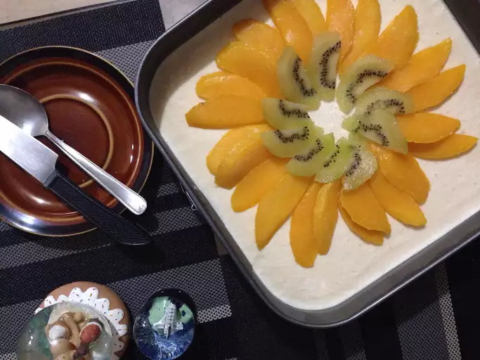

HOME
Mango Float Recipe

Description
This mango cheesecake is a Caribbean twist on a classic dessert. I used a ready made graham cracker crust because it makes prep time shorter and is perfect for this flavor of cheesecake.
Ingredients
- 2 (8 ounce) packages cream cheese, softened
- ¾ cup white sugar
- 2 large eggs
- 2 teaspoons vanilla extract
- 1 graham cracker crust, unbaked
- 1 ¼ cups mango nectar, divided
- ⅓ cup white sugar
- 2 tablespoons cornstarch
- 2 cups ripe mangoes, peeled, pitted, and diced
Steps
- Preheat the oven to 350 degrees F (175 degrees C).
- Mix 3/4 cup of sugar and cream cheese in a medium bowl. Mix in eggs one at a time, then stir in vanilla; pour mixture into graham cracker crust, and smooth over the top.
- Bake in preheated oven until the edges have puffed up but the middle still jiggles, about 30 minutes. Allow to cool for 30 minutes, then refrigerate until cold, about 3 hours.
- While the cheesecake is baking, pour 1 cup of mango nectar and 1/3 cup of sugar into a saucepan; bring to a boil over medium-high heat to dissolve the sugar. Dissolve cornstarch in the remaining 1/4 cup of mango nectar; stir into the boiling saucepan until thickened and clear, about 30 seconds. Place diced mango into a heatproof bowl, and toss with the thickened sauce. Allow to cool to room temperature, then pour over the cheesecake. Serve cold.